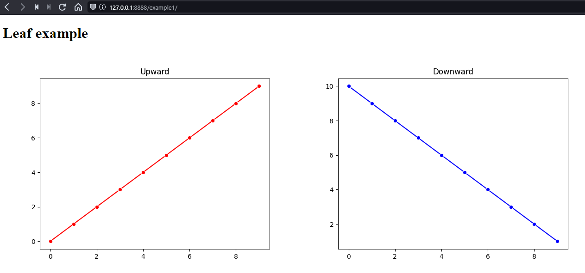

ReporTree: Nested HTML reports for Matplotlib
ReporTree produces nested static HTML reports with buttons to navigate through many matplotlib plots. The package can easily produce reports with many nested levels and hundreds of Matplotlib plots.
Warning
The selection of pages in nested reports works correctly only when served from the webserver (even the Python one works fine for local development, python -m http.server).
The selection is done via Javascript and the targets are loaded on the fly. When the reports are displayed locally, different files are considered as Cross-Origin access and the loading is blocked by the browser. Single page reports (i.e. Leaves) work fine.
This issue can be solved by using Mozilla Firefox for local browsing with changing security.fileuri.strict_origin_policy to false (in about:config).
Basic example
import reportree as rt
import seaborn as sns
import matplotlib.pyplot as plt
import numpy as np
fig1, ax1 = plt.subplots()
sns.lineplot(x=np.arange(10), y=np.arange(10), marker='o', ax=ax1, color='red')
ax1.set_title('Upward')
fig2, ax2 = plt.subplots()
sns.lineplot(x=np.arange(10), y=np.arange(10, 0, -1), marker='o', ax=ax2, color='blue')
ax2.set_title('Downward')
l1 = rt.Leaf([fig1, fig2], title='Leaf example')
l1.save('/tmp/example1')
l2 = rt.Leaf(fig1, title='Only upward')
l3 = rt.Leaf(fig2, title='Only downward')
b1 = rt.Branch([l1, l2, l3], title='Branch example')
b1.save('/tmp/example2')
b2 = rt.Branch([rt.Branch([b1, l1]), l2, l3, b1], title='Nested example')
b2.save('/tmp/example3')
The code produces following reports:
Leaf example
{kind=link}
Branch example

{kind=link}